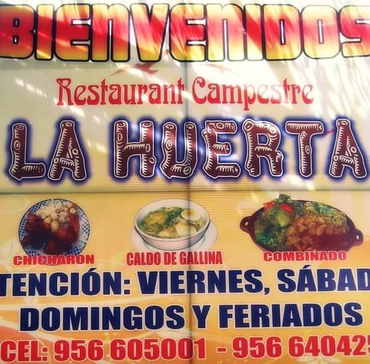

RESTAURANT CAMPESTRE "LA HUERTA"

Restaurant campestre la huerta le da la cordial bienvenida a toda la gente iqueña y exteriores a este su local ubicado en la avenida pachacutec z-4 en el distrito de pachacutec que les ofrece los mejores platos tradicionales de nuestra región Ica, acompañado también del trago bandera de la región, como el pisco, vino, cachina, al igual de los famosos tragos cortos como cocteles de diferentes variedades.
también disponemos con peña criolla todos los domingos y feriados, cochera para las movilidades de nuestros comensales, para los niños tenemos los juegos recreativos y por ultimo contamos con nuestra propia bodega vitivinícola donde se procesa y destila la uva traída de nuestra parcela, para nuestro rico pisco iqueño, de igual manera tenemos nuestro propio criadero de cerdos 100% vacunados y mantenidos de la mejor forma para los deliciosos chicharrones.
Nuestras puertas están abiertas de viernes a domingo y feriados de 11:00 am hasta las 06:00 pm para disgustar de los mejores platos y tragos de Ica, Te esperamos, ven y disfruta en familia.